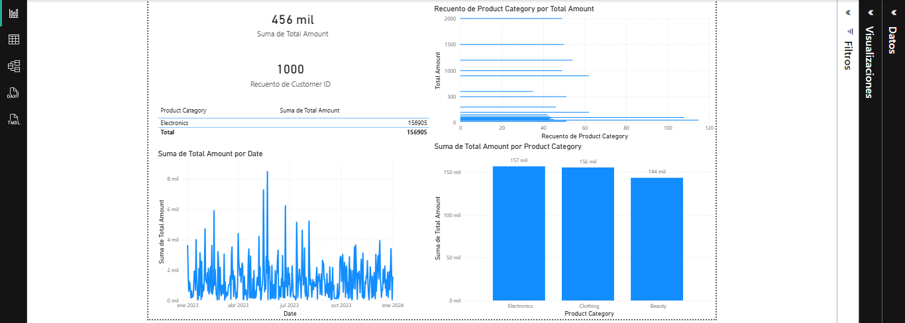

Contact
Email: sergyferreira153@gmail.com
Download CVI am a Software Analysis and Development trainee focused on IT Support and technical problem resolution.
I am building practical knowledge in Windows installation and configuration, hardware and software troubleshooting, basic networking, and user support in operational environments.
I enjoy understanding how systems work, identifying technical issues, and applying structured solutions that improve stability and user experience.
My professional goal is to grow within IT Support and progressively specialize in cybersecurity, contributing with responsibility, continuous learning, and clear technical documentation.
Complete deployment of an enterprise network environment. Includes AD DS configuration, user management (OUs/Groups), and Windows 10 client integration.
See project
This data analytics project focuses on a brick-and-mortar retail company (a chain of stores) and aims to analyze sales and product behavior to support inventory and sales decisions using data. The project simulates a real-world business scenario, similar to those faced by retail companies in Colombia and other countries.
See projectL1 Technical Support Manual: Real-world scenarios for system optimization, network fixes, and user access control.
See projectEmail: sergyferreira153@gmail.com
Download CV